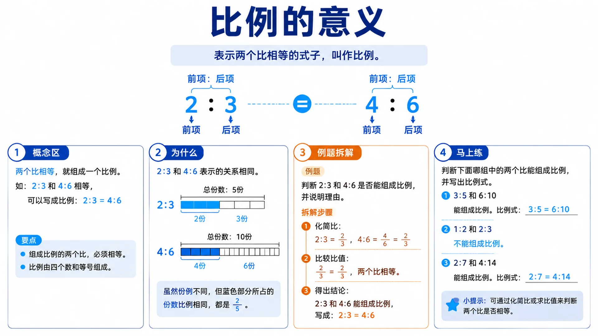
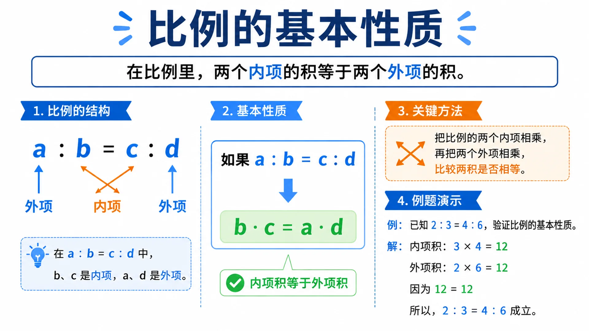
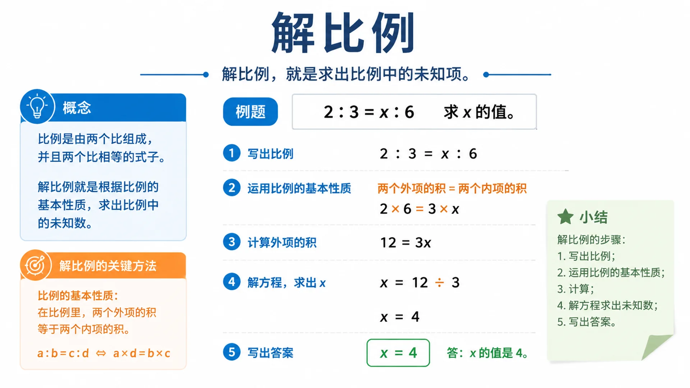
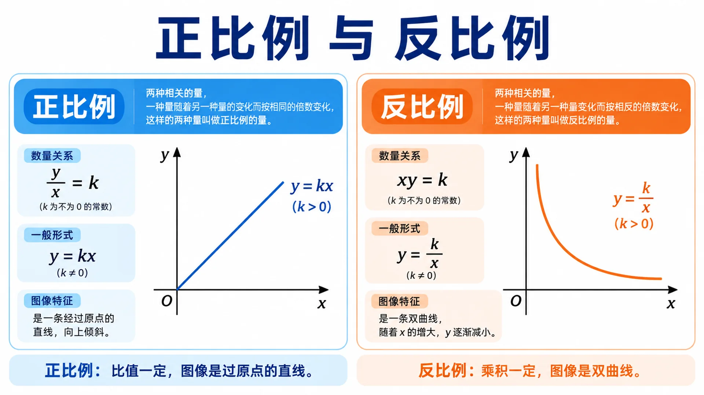

1比例的意义

两个比相等的式子叫作比例。如 2:3 与 4:6 比值相同（均为 2/3），可组成比例。
两个比相等 ⟺ 比值相同 ⟹ 可写成 a:b = c:d
2比例的基本性质

在比例里，两个内项的积等于两个外项的积（交叉相乘法则）。
a : b = c : d ⟹ b · c = a · d
3解比例

根据比例的基本性质，求出比例中的未知项。例题：2:3 = x:6 → x=4。
2 : 3 = x : 6 ⟹ 3x = 12 ⟹ x = 4
4正比例与反比例

正比例：比值一定，图像是过原点的直线；反比例：乘积一定，图像是双曲线。
正比例 y/x = k → 直线
反比例 xy = k → 双曲线
比值一定 vs 乘积一定
y = kx （正比例） | y = k/x （反比例）